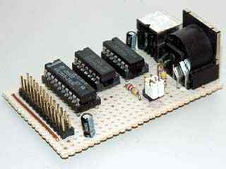
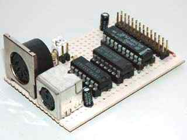
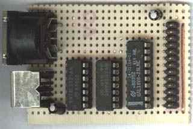
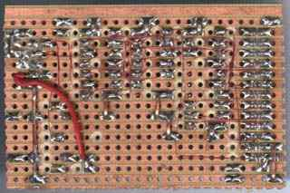

|
|
AT keyboard interface. By Lee Davison. |
|
The connector on the top left of the diagram is from my own 6502 boards (see sbc project) and is as it is for two reasons. It's easy to wire on a stripboard layout and I have a lot of 26 way ribbon, headers and plugs. All the signals are directly from the 6502 except /SEL0 and /SEL1 which are used to select the block $F1xx with /SEL0=1 and /SEL1=0.
The 5 pin DIN socket is shown looking at the holes of the socket. On the finished board I also fitted a PS2 style socket, either one works but the DIN type is easier to mount on stripboard.
The two capacitors are low ESR electrolytics and are placed near the GAL and near the keyboard socket. If you don't have this type to hand you can use standard electrolytics with some low value ceramic capacitor, say 0.1uF, in parallel.
The GAL16V8A is used purely to generate the read and write strobes. Each is a negative going pulse coincident with phase 2. The interface uses just one byte in the address range. For anyone interested the equations for this chip are in atkey_01.pld and can be compiled with WinCUPL. The fuse file, atkey_01.jed and the compiler listing atkey_01.txt are also included.
The 74LS74 is used to latch the two lowest bits of the data bus during write access to the interface. The reset line is connected so that both of these outputs are cleared at start-up (this disables the keyboard until required).
The outputs from the latches are used to drive the enable pins on two of the four buffers from the 74LS125, these are then used to drive the data and clock lines of the keyboard. The buffers have their inputs tied low so behave like open collector outputs when used like this.
The other two buffers are used to drive the data bus during read access. Note that the keyboard supplies the pull-up for both the data and clock lines so with no keyboard connected you may read zero when you expect a one.
 
Software.
The software has a few basic routines to raw handle the keyboard ...ResetATKeyLEDsThis routine sets the pointers to the decode table, clears the lock LEDs and the key status bits for the decode routine. Finally it resets the keyboard.
ScanATThis routine sets the keyboard lock LEDs from the lock LED status byte. Only bits 0, 1 and 2 are used.
SendATThis routine scans the keyboard to see if a scancode is waiting. If not it will return with A and RxChar set to zero after about 300uS, otherwise it will return the scancode in A and RxChar.
As well as matrix scancodes possible bytes returned by this routine are ...
$00 - No key waiting $AA - Power On Self Test Passed (BAT Completed) $EE - See Echo Command (Host Commands) $FA - Acknowledge $FE - Resend $FF - Error or Buffer Overflow This routine is used to send command and control bytes to the keyboard, the codes are ..
$ED - Set the LEDs according to the next byte I send
bit 0 = scroll lock
bit 1 = num lock
bit 2 = caps lock
bits 3-7 must be 0, 1 = LED on$EE - echo, keyboard will respond with $EE $F0 - set scan code set, upon sending the keyboard will respond with ACK ($FA) and then wait for a second byte. sending $01 to $03 determines the code set used, sending $00 will return the code set currently in use. $F3 - set typematic repeat rate, upon sending the keyboard will respond with ACK ($FA) and then wait for a second byte. this byte sets the rate. $F4 - keyboard enable, clears the keyboard buffer and starts scanning. $F5 - keyboard disable, clears the keyboard buffer and stops scanning. $F6 - restore default values upon sending the keyboard will respond with ACK ($FA). $FE - retransmit the last character please, upon sending the keyboard will respond by resending the last character. $FF - reset, you stupid keyboard There is one routine to make the keyboard look something like a standard ASCII character device. This is ...
ScanKeyNotes on the decoding table ...This routine checks for a key waiting and if there is will decode it to ASCII and return it in RxChar, else, on return, RxChar will be null. Note some valid key actions will result in a null return such as control, shift and lock keys and any undecoded key (cursor keys for example).
Use of the routines ...Most AT keyboard decoding software uses two tables, one for the unshifted characters and one for the shifted characters, some use further tables for control and alt character decoding as well. In this software The normal and shifted characters are held in the same table but shifted half the table length. This only causes a problem with the numeric pad slash character, /, but this is corrected with a small bit of extra code. Also some special characters, ¬ and £ (uk keymap), are outside the normal ASCII range. These are also handled by some extra code. Control characters are handled entirely by code as it is far cheaper, space wise, to do this.
The function keys each generate a unique code but this is not output by the routine, neither is the Win menu key code. It is left to the user how to use these keys. Cursor control keys are not coded as this interface was for a system without a screen type display, but this could easily be changed by adding the desired codes to the decode table.
Lastly the table overlaps the RTS of the last subroutine. This is not a mistake, the first byte in the table is never used so this will save a byte without penalty. For the same reason the table stops two bytes short of the end, again with no real loss. If space on the target system was really tight then some parts of the code could even be moved into the table, saving about fourteen bytes in total at the cost of a small slow down and increased stack use.
View the sourceTo save code, time and space nearly all of the subroutines rely on the values held in two or more registers upon calling and some routines rely on register values and flag states returned. If you are going to change the code read the comments carefully before changing any parts to ensure you don't violate any of these requirements. The code is fully commented.
 
With the addition of two 4k7 resistors this interface would be ideal for use as an i2c bus master, if you look at the finished board photos you can see these resistors and a pair of jumpers to select them. It turns out that another small change needs to be made. The result can be seen in my I2C project page.
| Last page update: 13th August, 2003. | e-mail me
 |